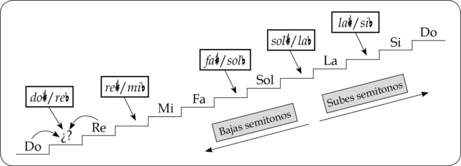
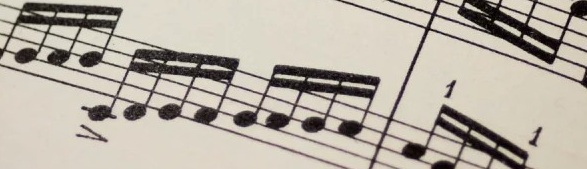

Una escala musical es una sucesión ordenada de notas que suben o bajan en altura 🎶. Es la base para crear melodías y armonías. Por ejemplo, la escala de Do mayor está formada por: Do - Re - Mi - Fa - Sol - La - Si - Do.

La escala mayor tiene un sonido alegre y brillante. Se construye siguiendo un patrón: tono - tono - semitono - tono - tono - tono - semitono. Es una de las más utilizadas en la música moderna.

La escala menor tiene un sonido más melancólico o triste. Su fórmula es: tono - semitono - tono - tono - semitono - tono - tono. Un ejemplo es la escala de La menor.
Comparte tu opinión o sugerencias.
Ahora entiendo mejor cómo funcionan las escalas.
La explicación fue clara y fácil de entender.
Me gustaría ver ejercicios prácticos.